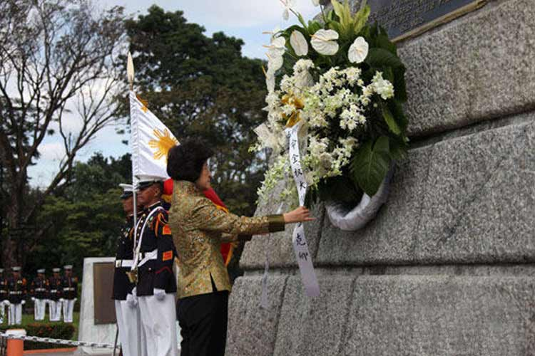

154年前的内湖省，一个有中国血统的家庭里诞生了一个男婴，他的祖籍为福建刺桐上郭村(今泉州晋江市新塘街道上郭社区)。他是菲律宾资产阶级民族主义启蒙思想家、作家、诗人；他是菲律宾反抗西班牙殖民统治、争取独立自由的民族英雄，是推动菲律宾历史进程的伟大人物之一；他在其逝世后一百多年来一直受到崇敬和爱戴，被菲律宾人民尊为国父。他，就是何塞·黎刹。
黎刹自幼聪慧，品学兼优，精通菲国以及西班牙等多国文字。14岁就获取文学学士学位，随后入圣道顿马士皇家教会大学，攻读哲学，兼学美术，后因母患眼疾，遂改读医科。18岁写出《给菲律宾青年》这首鼓舞人心的爱国诗篇，获全国诗歌比赛一等奖，被誉为菲律宾青年诗人，也因此受到西班牙殖民当局的迫害。1882年21岁的黎刹潜赴欧洲学习。三年后，取得医学博士学位，在大学里执教，被欧洲学术界公认为有成就的学者。
不看别的，光看这华丽的成绩单，黎刹就是足以让学渣们颤抖了。文学、哲学、美术、医学，随便拿一科出来就够普通人穷竭一生学习的知识，都被他学的融会贯通。这样学富五车又胸怀天下的人，注定是要做大事的，也注定……
黎刹多才多艺，既当医生又是作家，更是一位杰出的民主革命家。他从小就痛恨西班牙殖民统治者对菲律宾人民的歧视和压迫，1887年在欧洲大学执教，用西班牙文创作《社会毒瘤》一书，揭露、鞭笞西班牙殖民统治者对菲律宾人民的残酷统治。两年之后，又出版该书的续篇《贪婪的统治》，号召菲律宾人民开展反对殖民统治的武装革命斗争。
1892年6月，黎刹回到菲律宾。7月3日在马尼拉组织召开了“菲律宾同盟”成立大会以领导菲律宾国内革命斗争，他号召通过温和手段和合法途径，把菲律宾建成一个统一的民族共同体，发展民族经济并改良社会制度，遭到了西班牙殖民者的镇压，同年7月7 日，黎刹被捕流放到达皮丹岛，同盟会随即解散。
1896年12月30日，西班牙殖民地政府在马尼拉枪决年仅35岁的反西志士黎刹。他英勇就义前，与一位来自香港的爱尔兰姑娘约瑟芬·布蕾肯在刑场结婚，令人感动不已。他留给新娘和菲人的遗物之一，是爱国绝命诗篇《我的诀别》，呼吁同志继续为革命努力。他的尸体被草草埋葬马尼拉华侨义山侧，后来他被尊为国父，其遗骸才移葬马尼拉湾畔的黎刹广场，矗立起纪念碑。黎刹就义之日为菲律宾国定假日，称为“黎刹日”。
1、每年12月30日为菲律宾的黎刹日；
2、黎刹被称为菲律宾国父，是伟大的作家和革命者。